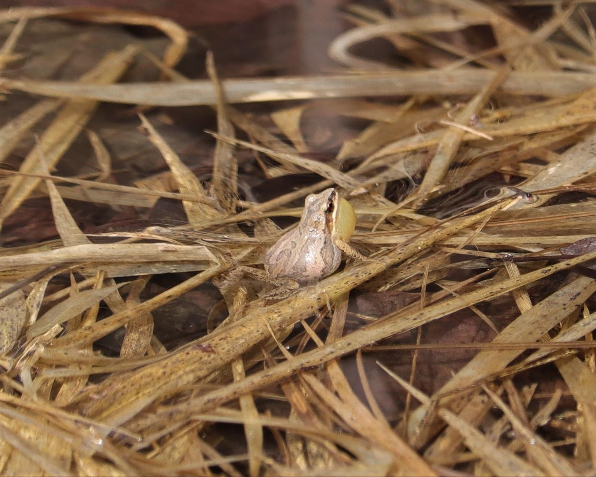

Eastern Ribbon Snake (Thamnophis sauritus)
Status:
Threatened in Canada since 2005/Special Concern in Ontario since 2008
Identification:
• Long, thin-bodied snake, ~ 85 cm long
• Three yellow stripes running down the length of the body
• Distinct head and neck
• Differentiated from the Eastern Garter Snake by a crescent-shaped scale in front of each eye (this is not present in Eastern Garter Snakes)
Diet:
Eastern Ribbonsnakes feed in the early morning and evening. They primarily eat amphibians, especially frogs, but will also eat small fish and various insects.
Habitat and Biology:
Within Canada, the Eastern Ribbonsnake is found in southern Ontario, southern Quebec, and Nova Scotia. Eastern Ribbonsnakes are a semi-aquatic species and are found near year-round water sources with access to dry land. They prefer wetlands and other shallow bodies of water. They are most active during the day and can be found basking on emergent logs, rocks, and shorelines often with other individuals. During the winter months, Eastern Ribbonsnakes hibernate underground individually or communally in animal burrows or rock crevices. Instead of laying eggs, the Eastern Ribbonsnake gives birth to live young in the late summer.
Threats:
• Widespread loss of wetlands and shoreline degradation due to residential, commercial and agricultural development
• Limited food availability due to declines in amphibian populations
• Road mortality
• Introduction of predatory fish such as Large-mouth Bass that reduce prey availability
Importance:
The Land Between is a last refuge for the Eastern Ribbonsnake in Ontario due to the alarming rate of development and habitat loss in southern Ontario. Amphibians, like frogs and toads, respond quickly to changes in their environment making them good indicators of ecosystem health. The presence of Eastern Ribbonsnakes on a property suggests that amphibian populations are stable and the resident ecosystem is healthy. This is extremely beneficial when monitoring water quality. Snakes also provide food for birds and other larger animals.
How to Help:
• Identify and report sightings of the Eastern Ribbonsnake to The Land Between website and/or to iNaturalist (refer to the “Reporting” section at the beginning of this guide for more information).
• Keep shorelines natural and preserve wetlands on your property
• Limit the use of agricultural and horticultural pesticides on your property, especially near bodies of water
• Learn how to create a snake hibernaculum. For instance, you can dig a pit with chambers at various depths, and fill it with concrete blocks and rocks.
• Refer to the “General Snakes” page at the beginning of the section for more suggestions on how to help snakes like the Eastern Ribbonsnake
Did you know?:
The Eastern Ribbonsnakes’ tail accounts for approximately one third of its body length!
Massasauga Rattlesnake (Sistrurus catenatus)
Status:
Threatened in Canada since 2005/Threatened in Ontario since 2008
Identification:
• Short, thick-bodied snake, ~ 76 cm long
• Grey to brown body with dark, bowtie-shaped blotches on top alternating with smaller blotches along the side
• Segmented rattle at the end of the tail
• Triangular shaped head when viewed from above with a large, dark bar extending behind each eye
• The only snake with vertical (cat-like) pupils in Ontario
Diet:
Massasaugas are sit-and-wait predators; they use heat sensitive pits between the eye and nostril to detect warm-blooded prey, and use venom from their bite to immobilize the animal. Adult Massasaugas feed almost exclusively on small mammals while juveniles eat a wider variety of prey, including amphibians and invertebrates.
Habitat and Biology:
The Canadian range of the Massasauga lies entirely within Ontario; in the Georgian Bay region and the Carolinian region. Massasaugas are habitat generalists but have very specific microhabitat requirements. They can be found in prairies, wetlands, forest edges and rock barrens habitats though they are typically found in close proximity to bodies of water. They also require a semi-open habitat to provide cover from predators as well as basking opportunities. Massasaugas are the only venomous snakes in Ontario and are very shy. When threatened, Massasaugas retreat if possible or rattle their tail as a warning. They will only try to bite as a last resort. Massasaugas hibernate individually or communally underground and require structurally sound crevices such as rock outcrops, old root systems, and animal burrows. Females give birth to live young every other year in the late summer.
Threats:
• Loss of suitable habitat and destruction of microhabitat due to commercial and residential development
• Illegal persecution - Massasaugas pose little threat to public safety, but are often killed out of fear
• Road mortality
• Illegal collection for the pet trade
Importance:
Massasaugas have already been lost from most of their historic range and are unique as the only vipers in Ontario. They pose little threat to public safety and are rarely encountered. Massasaugas can be useful as a natural pest control in areas where small rodent populations are abundant and may carry diseases and parasites. As with all snakes, Massasauga Rattlesnakes help keep an integral balance in the ecosystem.
How to Help:
• Identify and report sightings of the Massasauga to The Land Between website and/or to iNaturalist (refer to the “Reporting” section at the beginning of this guide for more information)
• Maintain a wide buffer of native plants along shorelines and preserve wetlands on your property
• Spread the word! Tell your kids, friends, and family that Massasauga Rattlesnakes pose little threat and shouldn’t be disturbed
• Refer to the “General Snakes” page at the beginning of the section for more suggestions on how to help snakes like the Massasauga Rattlesnake
Did you know?
No one has died from a Massasauga rattlesnake bite in Ontario in more than 50 years! Only two deaths resulting from a Massasauga bite have ever been reported in Ontario.
Five-lined Skink (Plestiodon fasciatus)
Status:
Special Concern in Canada since 2009/ Special Concern in Ontario since 2009
Identification
• Small lizard, ~ 8.6 cm long from vent to snout
• Black body with five cream-coloured lines running lengthwise
• Juveniles have a bright blue tail that fades to brown with age
• Males have orange jaws during breeding season
• Only lizard native to Ontario
Diet:
Five-lined Skinks are active foragers and typically hunt in plant litter or climb trees to catch prey. Their primary food source is a variety of invertebrates such as crickets, worms and spiders.
Habitat and Biology:
In Canada, the Five-lined Skink occurs only in Ontario on the southern Canadian Shield and in southwestern Ontario. Five-lined Skinks prefer habitat with a relatively open canopy, rocky outcrops, and new plant growth. They spend the majority of their time under the cover of rocks and logs, but can be seen basking on cooler mornings. They move quickly and when threatened will flee or “drop” their tails as a way to escape predators, leaving their tail behind. Five-lined Skinks have no defined home range and are not territorial. They hibernate communally under rocks and decaying wood, and sometimes even nest communally. Females lay their eggs under rocks or debris in early summer and sit with their nest to defend it from predators.
Threats:
• Loss of suitable habitat and destruction of microhabitat due to residential development and recreational activities
• Road mortality
• Illegal collection for the pet trade
• Increased number of predators including cats and dogs
Importance:
The Five-lined Skink is eastern Canada’s only lizard species and approximately 90% of the population is found in the Land Between region. Individual and group efforts made here can have a large impact on the overall population.
How to Help:
• Identify and report sightings of the Five-lined Skink to The Land Between website and/or to iNaturalist (refer to the “Reporting” section at the beginning of this guide for more information)
• Leave open rock habitat as natural as possible and avoid moving rocks and other objects that could provide cover
• Do not let pets off leash on trails and monitor them closely
• Refer to the “Snakes Overview” page at the beginning of the section for more suggestions on how to help the Five-lined Skink and related species
Did you know?
Females will bask in the sun to raise their body temperature then return to their nest to warm the eggs.
Western Chorus Frog (Pseudacris triseriata)

Status:
Threatened in Canada since 2010/ Not Listed in Ontario
Species Identification:
• Small tree frog, ~ 2.5 cm long from vent to snout
• Olive-grey to brown with three dark dorsal stripes sometimes broken into blotches
• Dark line from snout to groin and white line on upper lip
• Call sounds like running a finger across the teeth of a comb
• Distinguishable from Boreal Chorus Frog by call and separate range
Diet:
Western Chorus Frogs consume a variety of small, terrestrial invertebrates such as beetles, mites, spiders, and slugs. They are not good climbers and feed on the ground or in low vegetation from dusk to dawn.
Habitat and Biology:
In Canada, the Western Chorus Frog occurs only in southern Ontario and southwestern Quebec (the Boreal Chorus Frog occurs in northern Ontario and the central provinces). Western Chorus Frogs are poor swimmers and only spend about 20 days of the breeding season in aquatic habitats. They are one of the first frogs to call in the spring, sometimes as early as March, and can start breeding before the water is free of ice. Western Chorus Frogs lay their eggs in shallow, often temporary water bodies such as flooded fields, ditches, and swamps to avoid aquatic predators. Terrestrial habitat is often selected based on proximity to breeding ponds, but grassy or wooded areas near water, or damp, open habitats are preferred. Western Chorus Frogs are freeze-tolerant and hibernate under rocks, logs, leaf litter, and loose soil.
Threats:
• Habitat loss due to commercial and agricultural development. Land drained for construction or agricultural purposes eliminates temporary breeding ponds
• Road mortality
• Pollution - Amphibians have permeable skin that easily absorbs chemicals into their bodies
Importance:
Amphibians, such as frogs and toads, respond quickly to changes in their environment making them good indicators of ecosystem health. Hearing Western Chorus Frogs call in the spring is an indication of a healthy habitat. Chorus Frogs also help to control populations of mosquitoes and flies which can be pesky for humans.
How to Help:
• Identify and report sightings of the Western Chorus frog to The Land Between website and/or to iNaturalist (refer to the “Reporting” section at the beginning of this guide for more information)
• Leave areas with seasonal flooding as natural as possible
• Limit the use of agricultural and horticultural pesticides on your property
Did you know?
Western Chorus Frogs rarely live longer than one year, but some individuals have been known to live up to three years.
Eastern Milksnake (Lampropeltis Triangulum)
Status:
Special Concern in Canada since 2005/ Not at Risk in Ontario since 2016
Identification:
• Long, thin bodied snake, ~ 90 cm long
• Grey to brown body with large, red-brown blotches outlined in black on top, alternating with smaller blotches along the side
• Black and white checkered underside
• Y or V-shaped pattern on top of the head
• Distinguishable from Massasauga Rattlesnake by rounded head when viewed from above (Massasauga Rattlesnake has a triangular head)
Diet:
Eastern Milksnakes are constrictors which means that they coil around their prey until the animal suffocates, then consume it whole. Eastern Milksnakes hunt at night feeding primarily on small mammals, but will also eat amphibians, worms, smaller snakes, and eggs.
Habitat and Biology:
The Canadian range of the Eastern Milksnake extends from southern Ontario up to around Sault Ste Marie, and across to southwestern Quebec. Eastern Milksnakes can be successful in a variety of both natural and human-influenced habitats preferring open landscapes such as forest edges, rocky outcrops and fields. They are often found around buildings that have an abundance of rodents, such as barns and sheds, where they can enter the foundation in search of food or shelter. Eastern Milksnakes will also hibernate in building foundations, basements, or underground to avoid freezing temperatures. Females lay their eggs from May to July in a variety of substrates including rotting logs, leaf mounds, mammal burrows, and under boards. When threatened, the Eastern Milksnake mimics a rattlesnake by vibrating its tail against vegetation in an attempt to deter predators.
Threats:
• Loss of habitat due to residential and commercial development and the modernization of old buildings
• Illegal persecution - Eastern Milksnakes are often mistaken for the Massasauga Rattlesnake, and are killed out of fear
• Road mortality
• Farming equipment and domestic cats
Importance:
Eastern Milksnakes can be useful as a natural pest control where small rodent populations are abundant and may carry diseases and parasites. They can also be an important food source for birds and other animals. As with all snakes, Eastern Milksnakes help keep an integral balance in the ecosystem.
How to Help:
• Identify and report sightings of the Eastern Milksnake to The Land Between website and/or to iNaturalist (refer to the “Reporting” section at the beginning of this guide for more information)
• Maintain or create brush piles and leave decaying wood on your property
• Avoid moving rocks or anything that could provide cover
• Consider leaving old buildings that are being used by wildlife
• Refer to the “General Snakes” page at the beginning of the section for more suggestions on how to help snakes like the Eastern Milksnake
Did you know?
The name of this species is derived from the belief that it takes milk from cows in barns. Milksnakes do not drink milk and are attracted to barns because mice are their primary prey.
{kind=link}
{kind=link}
{kind=link}
{kind=link}
{kind=link}
{kind=link}
{kind=link}
{kind=link}
{kind=link}
{kind=link}
{kind=link}
{kind=link}
{kind=link}
{kind=link}
{kind=link}